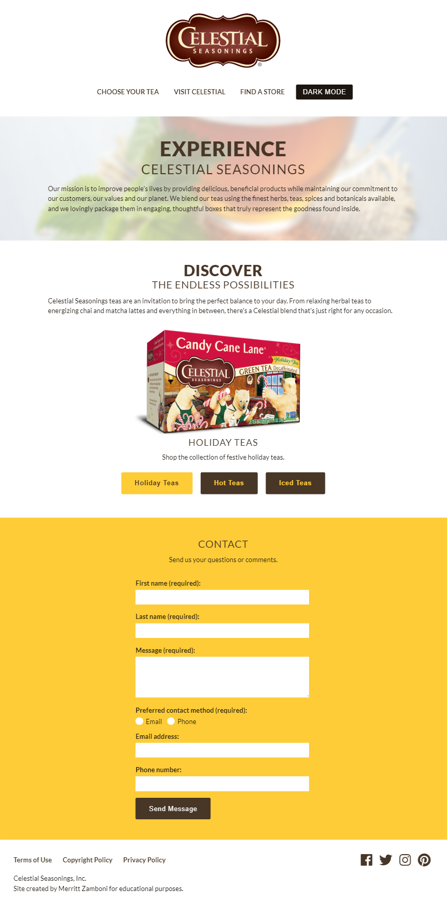
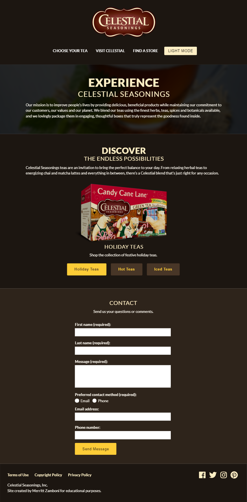
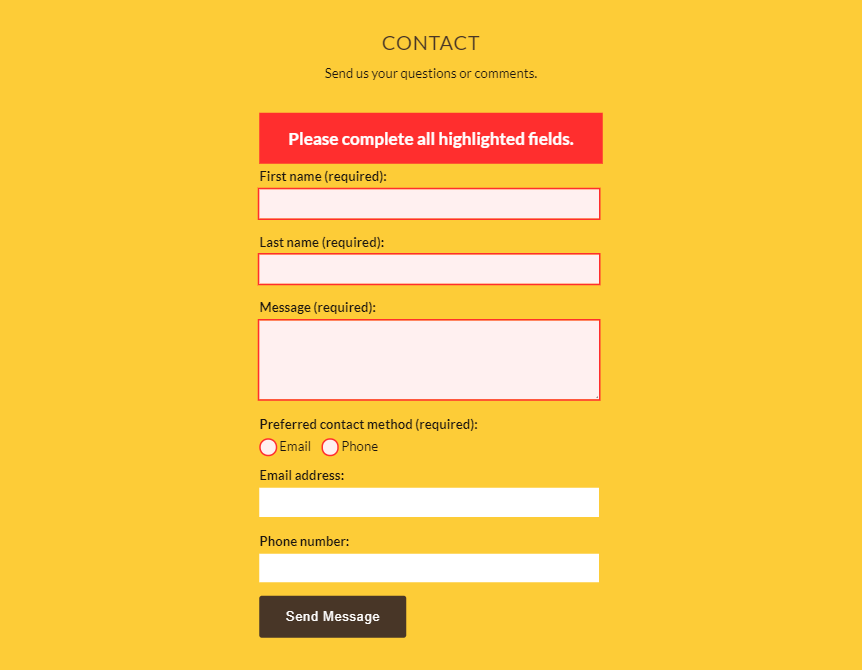
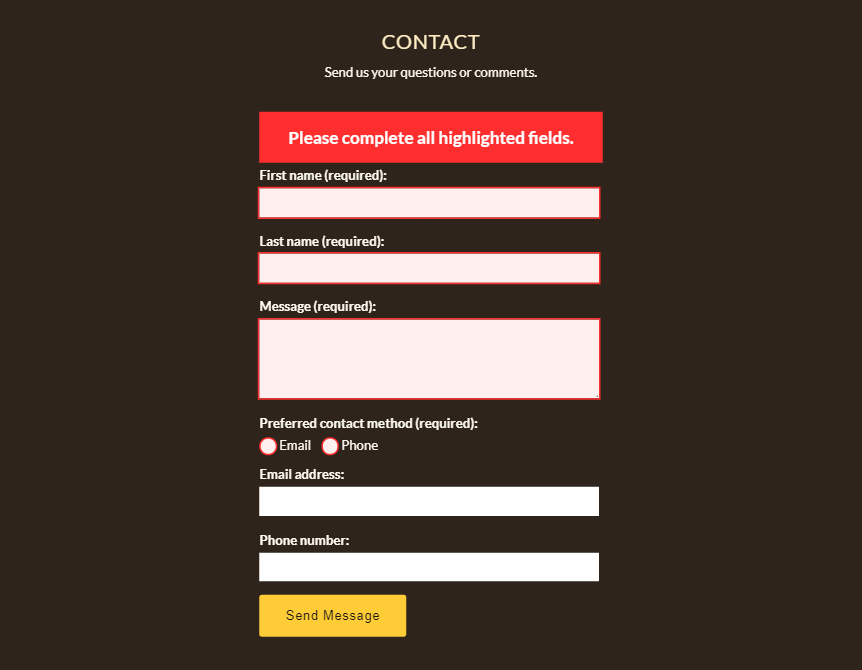

Celestial Seasonings
Web Design & Development
The goal of this project was to design and code a dark and light mode versions of a small website. The design is based off Celestial Seasonings' existing website and branding.


Development
Using JavaScript, I created a button to allow users to toggle between dark and light mode. Additionally, I added form verification, highlighting missing form fields and preventing form submission until all required info is entered.
The interactive site can be viewed here.

